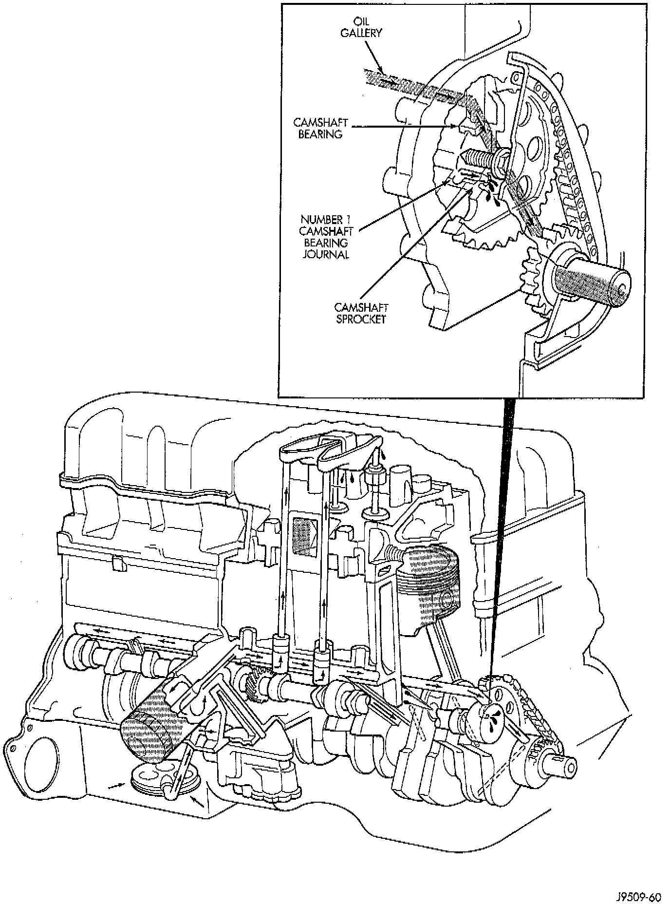

Engine Lubrication: Description and Operation

OIL PUMP
A gear-type positive displacement pump is mounted at the underside of the block opposite the No. 4 main bearing. The pump draws oil through the screen and inlet tube from the sump at the rear of the oil pan. The oil is driven between the drive and idler gears and pump body, then forced through the outlet to the block. An oil gallery in the block channels the oil to the inlet side of the full flow oil filter. After passing through the filter element, the oil passes from the center outlet of the filter through an oil gallery that channels the oil up to the main gallery which extends the entire length of the block.
OIL GALLERIES
Galleries extend downward from the main oil gallery to the upper shell of each main bearing. The crankshaft is drilled internally to pass oil from the main bearing journals (except number 4 main bearing journal) to the connecting rod journals. Each connecting rod bearing cap has a small squirt hole, oil passes through the squirt hole and is thrown off as the rod rotates. This oil throw-off lubricates the camshaft lobes, distributor drive gear, cylinder walls, and piston pins.
HYDRAULIC TAPPETS
The hydraulic valve tappets receive oil directly from the main oil gallery. Oil is provided to the camshaft bearing through galleries. The front camshaft bearing journal passes oil through the camshaft sprocket to the timing chain. Oil drains back to the oil pan under the number one main bearing cap.
ROCKER ARMS
The oil supply for the rocker arms and bridged pivot assemblies is provided by the hydraulic valve tappets which pass oil through hollow push rods to a hole in the corresponding rocker arm. Oil from the rocker arm lubricates the valve train components, then passes down through the push rod guide holes in the cylinder head past the valve tappet area, and returns to the oil pan.